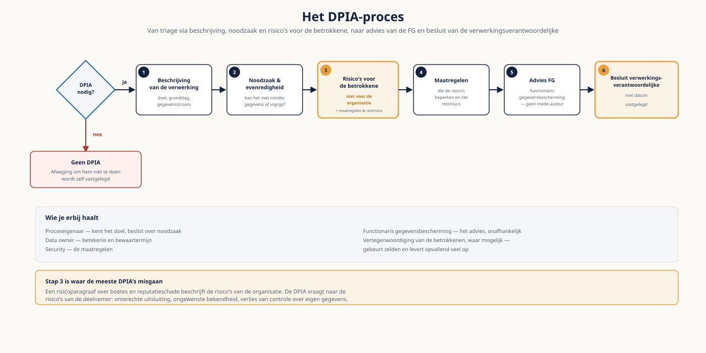

Deel 17 — Privacy, security en compliance in uitvoering
Niveau 2 — Praktijk · Reader
Voorbereiding, geen vervanging
Deze cursusmap is onafhankelijk ontwikkeld door Ductus B.V. Ductus is niet gelieerd aan, geaccrediteerd door of goedgekeurd door DAMA International, IIBA, IAPP, de EDM Association of Microsoft.
Dit materiaal bereidt voor op de genoemde examens en vervangt het officiële examenmateriaal niet. Bodies of knowledge, handboeken en examenblueprints worden hier niet gereproduceerd; deelnemers schaffen die bronnen zelf aan.
Alle genoemde merken zijn eigendom van hun respectieve houders. Examengegevens gecontroleerd in augustus 2026 — verifieer vóór inschrijving bij de bron.
Geen juridisch advies
Dit deel geeft het uitvoeringskader dat een consultant of architect nodig heeft om ontwerpen te maken die standhouden en om tijdig te escaleren. Het is geen juridisch advies. In elke concrete casus is de functionaris gegevensbescherming of de huisjurist leidend. Waar dit deel wetgeving noemt, gaat het om de strekking en niet om de exacte tekst; controleer die bij de bron.
1. Waar dit deel over gaat
In deel 7 leerde je de vragen stellen. Hier voer je uit: een DPIA doen, een toegangsmodel ontwerpen, testdata regelen, en toezichtseisen vertalen naar maatregelen in het landschap. Dat is werk waar je als data-analist of architect wél verantwoordelijk voor bent, ook al ben je geen jurist.
Het terugkerende patroon in dit deel: privacyproblemen zijn zelden juridische problemen. Ze zijn ontwerpproblemen die zich als juridisch probleem voordoen op het moment dat iemand een verzoek indient of een toezichthouder een vraag stelt. Meridiaan kan geen inzageverzoek beantwoorden, niet omdat de wet onduidelijk is, maar omdat niemand weet waar de gegevens staan.
Leerdoelen
- Je vult een verwerkingsregister aan en houdt het actueel zonder het tot een administratielast te maken.
- Je bepaalt of een DPIA nodig is en voert er een uit met de juiste betrokkenen.
- Je past privacy by design toe in datamodellen en verwerkingsketens.
- Je richt de afhandeling van betrokkenenrechten technisch en procesmatig in.
- Je kiest tussen pseudonimisering, anonimisering en synthetische data, en kent de grenzen van elk.
- Je ontwerpt een toegangsmodel dat werkbaar blijft en herbeoordeling afdwingt.
- Je vertaalt toezichtseisen naar concrete maatregelen in het datalandschap.
2. Het verwerkingsregister
Het register is de basis waarop vrijwel al het andere leunt: zonder overzicht van verwerkingen kun je geen DPIA-triage doen, geen bewaartermijnen beleggen en geen inzageverzoek beantwoorden. In de praktijk is het meestal een spreadsheet die één keer is gevuld en daarna verouderde.
Wat een bruikbaar register bevat
- Doel en grondslag per verwerking — niet per systeem. Eén systeem kan meerdere verwerkingen bevatten met verschillende grondslagen.
- Categorieën betrokkenen en gegevens, met markering van bijzondere categorieën.
- Ontvangers, inclusief verwerkers en subverwerkers.
- Bewaartermijn, met de onderbouwing ervan.
- Beveiligingsmaatregelen op hoofdlijnen.
- De verantwoordelijke: een naam, geen afdeling.
- De datum van laatste toetsing en door wie.
Waarom het register veroudert
Omdat bijhouden een losstaande handeling is. De oplossing is koppeling: laat de aanmelding van een nieuwe verwerking een stap zijn in een proces dat toch al plaatsvindt — de acceptatie van een nieuwe dataset, de oplevering van een koppelvlak, of het toegangsverzoek. Een register dat meelift op bestaande processen blijft actueel; een register dat een eigen invulronde vraagt, niet.
3. DPIA
Triage: is er een DPIA nodig?
Niet elke verwerking vraagt een DPIA. De hoofdregel is dat hij nodig is bij een waarschijnlijk hoog risico voor betrokkenen. Drie signalen wegen zwaar: grootschalige verwerking van bijzondere gegevens, systematische en uitgebreide beoordeling van personen, en grootschalige monitoring. Bij twijfel doe je hem — en die twijfel leg je vast, want de afweging om hem níét te doen is zelf een te verantwoorden besluit.
Wat een DPIA bevat
- Een systematische beschrijving van de verwerking, inclusief doel, grondslag en de gegevensstroom.
- Een beoordeling van noodzaak en evenredigheid: kan het met minder gegevens of met een minder ingrijpend middel?
- De risico’s voor betrokkenen — niet voor de organisatie. Dat onderscheid wordt structureel verward.
- De maatregelen die die risico’s beperken, en het restrisico dat overblijft.
- Het advies van de functionaris gegevensbescherming.
- Het besluit van de verwerkingsverantwoordelijke, met datum.
Het derde punt is waar de meeste DPIA's misgaan. Een risicoparagraaf die gaat over boetes en reputatieschade beschrijft de risico’s van de organisatie. De DPIA vraagt naar de risico’s van de deelnemer: onterechte uitsluiting, ongewenste bekendheid van gezondheidsgegevens, verlies van controle over eigen gegevens.
Wie je erbij haalt
- De proceseigenaar, want die kent het doel en kan over noodzaak beslissen.
- De data owner, voor de betekenis en de bewaartermijn.
- Security, voor de maatregelen.
- De functionaris gegevensbescherming, voor het advies — en die is geen mede-auteur, want dan kan hij niet meer onafhankelijk adviseren.
- Waar mogelijk een vertegenwoordiging van de betrokkenen, bijvoorbeeld via een deelnemersraad. Dat gebeurt zelden en levert opvallend veel op.

4. Privacy by design in het landschap
Privacy by design klinkt abstract en is in jouw vak heel concreet. Het zijn ontwerpkeuzes in modellen en ketens die achteraf duur of onmogelijk te herstellen zijn.
| Ontwerpkeuze | Wat je doet | Wat je voorkomt |
|---|---|---|
| Scheiding van identificerende en overige gegevens | Directe identificatoren in een aparte tabel met eigen toegang | Dat elke analist bij naam en adres kan |
| Bewaartermijn als attribuut | Per record vastleggen tot wanneer het bewaard mag worden | Dat opschonen een handmatig project wordt |
| Doelregistratie bij de dataset | Vastleggen waarvoor een dataset is aangemaakt | Ongemerkt hergebruik voor een ander doel |
| Verwijderbaarheid ontwerpen | Vooraf bepalen hoe een record wordt verwijderd, inclusief kopieën | Dat wissen technisch onmogelijk blijkt bij het eerste verzoek |
| Minimalisatie in het koppelvlak | Alleen leveren wat de afnemer nodig heeft | Dat elke afnemer het volledige bestand krijgt |
De vierde is de meest onderschatte. Verwijderbaarheid moet je ontwerpen: in een genormaliseerd model met verwijzingen, in een Data Vault met satellites, en in back-ups. Wie dat pas bij het eerste wissingsverzoek uitzoekt, ontdekt dat het antwoord "technisch niet mogelijk" is — en dat is geen antwoord dat je aan een toezichthouder geeft.
5. Betrokkenenrechten operationeel
In deel 7 zag je waar de rechten technisch stuklopen. Hier richt je de afhandeling in.
| Element | Ontwerpvraag | Bij Meridiaan |
|---|---|---|
| Ingang | Waar komt een verzoek binnen en wie herkent het als zodanig? | Klantcontact; medewerkers moeten een verzoek herkennen dat niet zo heet |
| Identificatie | Hoe stel je vast dat de verzoeker is wie hij zegt? | Zonder overmatige gegevensuitvraag — dat is zelf een verwerking |
| Vindbaarheid | Waar staan alle gegevens over deze persoon? | Legacy, platform, gedeelde mappen, archief, back-ups |
| Termijn | Binnen welke tijd, en wie bewaakt dat? | Eén maand als hoofdregel, met verlengmogelijkheid bij complexiteit |
| Uitvoering | Wie voert uit, en hoe wordt het geverifieerd? | Steward per domein; verificatie door een tweede persoon |
| Vastlegging | Wat leg je vast over de afhandeling? | Verzoek, besluit, uitvoering en datum — als verantwoording |
De vindbaarheid is bij vrijwel elke organisatie de bottleneck, en zij is geen juridisch maar een datamanagementprobleem. Een organisatie met een gevulde catalogus en werkende lineage beantwoordt een inzageverzoek in dagen; een organisatie zonder in weken — als het al lukt.
6. Pseudonimiseren, anonimiseren, synthetische data
| Techniek | Wat het is | Geschikt voor | Grens |
|---|---|---|---|
| Pseudonimisering | Identificatoren vervangen door een sleutel | Analyse binnen de organisatie | Blijft persoonsgegeven; alle regels blijven gelden |
| Generalisatie | Waarden grover maken, bijvoorbeeld geboortejaar in plaats van datum | Statistiek en rapportage | Combinaties kunnen alsnog identificeren |
| Onderdrukking | Kleine groepen niet publiceren | Publicatie van geaggregeerde cijfers | Vraagt een expliciete minimale groepsgrootte |
| Anonimisering | Herleiding onomkeerbaar onmogelijk gemaakt | Publicatie, extern delen, onderzoek | Moeilijker dan het lijkt; vaak is het feitelijk pseudonimisering |
| Synthetische data | Gegenereerde data met dezelfde statistische eigenschappen | Testen, ontwikkelen, demonstreren | Zeldzame combinaties kunnen echte personen benaderen |
Testen met productiedata
De meest voorkomende praktijkvraag in dit deel. Het korte antwoord is dat het zelden mag zonder maatregelen: testen is doorgaans een ander doel dan waarvoor de gegevens zijn verzameld, en testomgevingen hebben structureel lagere beveiliging en ruimere toegang.
Bruikbare routes, in volgorde van voorkeur: synthetische data die de vorm en de randgevallen nabootst; een gepseudonimiseerde en verkleinde kopie met dezelfde toegangsbeperkingen als productie; of, als laatste optie, productiedata met een expliciet vastgelegd besluit, een beperkte termijn en aantoonbare verwijdering achteraf. Die laatste route vraagt een besluit van de verwerkingsverantwoordelijke, geen afspraak tussen twee ontwikkelaars.
De maat voor herleidbaarheid
Een dataset waarin elke combinatie van kenmerken door minstens k personen wordt gedeeld, is moeilijker te herleiden naarmate k groter is. Dat is geen garantie maar wel een toetsbaar criterium — en het is aanzienlijk beter dan "we hebben de namen eruit gehaald". Bij Meridiaan is de regeling met vier deelnemers het voorbeeld waar elke aggregatie stukloopt.
7. Toegangsbeheer
| Model | Hoe het werkt | Sterk in | Let op |
|---|---|---|---|
| RBAC | Rechten aan rollen, rollen aan personen | Overzichtelijk bij stabiele functies | Rolexplosie: elke uitzondering wordt een nieuwe rol |
| ABAC | Rechten volgen uit attributen van gebruiker, gegeven en context | Fijnmazigheid zonder rolexplosie | Lastiger uit te leggen en te auditen |
| Purpose-based | Toegang gekoppeld aan een vastgelegd doel | Aantoonbaarheid van doelbinding | Vraagt een gevuld verwerkingsregister |
| Just-in-time | Tijdelijke verhoogde rechten, met vervaldatum | Beheertaken en incidenten | Vervalt alleen als het systeem het afdwingt |
Wat een toegangsmodel houdbaar maakt
- Herbeoordeling met een vaste frequentie, waarbij de leidinggevende actief moet bevestigen. Een herbeoordeling waarbij niets doen betekent dat rechten blijven, is geen herbeoordeling.
- Automatisch intrekken bij functiewijziging, met opnieuw toekennen als aparte handeling. Dat is de enige structurele maatregel tegen stapeling.
- Loggen van toegang tot bijzondere gegevens, met periodieke steekproef. Zonder controle is loggen alleen opslag.
- Een uitzonderingsroute met termijn en eigenaar — anders ontstaat er een schaduwroute.
8. Toezicht en regelgeving
Voor een pensioenuitvoerder komen meerdere kaders samen. Je hoeft ze niet te beheersen; je moet weten wanneer ze jouw ontwerp raken en wie je erbij haalt.
| Kader | Raakt jouw werk bij | Concrete gevolgen |
|---|---|---|
| AVG | Elke verwerking van persoonsgegevens | Grondslag, minimalisatie, bewaartermijn, rechten, aantoonbaarheid |
| NIS2 | Beschikbaarheid en ketenrisico bij essentiële dienstverlening | Zorgplicht, meldplicht bij incidenten, aandacht voor toeleveranciers |
| EU Data Act | Toegang tot en overdraagbaarheid van data, cloudwissel | Contractuele afspraken en exitvoorwaarden bij leveranciers |
| Data Governance Act | Datadeling via tussenpersonen en altruïstisch datagebruik | Relevant bij deelname aan een data space of ecosysteem |
| BCBS 239 (strekking) | Risicorapportage: nauwkeurigheid, volledigheid, tijdigheid, aantoonbaarheid | Lineage, kwaliteitsmeting en governance op rapportageketens |
| DNB- en EIOPA-verwachtingen | Beheerste bedrijfsvoering en datakwaliteit in rapportageketens | Aantoonbare herkomst en vastgelegde besluitrechten |
Merk op hoeveel van deze kaders om hetzelfde vragen: weten waar je gegevens vandaan komen, kunnen aantonen dat ze kloppen, en kunnen laten zien wie waarover heeft besloten. Dat is geen toeval. Wie lineage, kwaliteitsmeting en besluitrechten op orde heeft, voldoet grotendeels aan alle zes tegelijk — en dat is het sterkste argument om ze te financieren.
9. Verwerkers en doorgifte
- Elke partij die voor jou persoonsgegevens verwerkt, is een verwerker en vraagt een verwerkersovereenkomst. Cloudleveranciers en softwareleveranciers met toegang vallen daaronder.
- Verwerkers schakelen zelf subverwerkers in. Vraag om de lijst en om een meldplicht bij wijziging; die lijst is vaker langer dan verwacht.
- Doorgifte buiten de EER vraagt een geldige grondslag en aanvullende beoordeling. Let op dat "de data staat in Europa" niet hetzelfde is als "er is geen doorgifte" — toegang vanuit een derde land telt ook.
- Leg vast wat er bij beëindiging gebeurt: teruggave of verwijdering, met bewijs. Dat is precies het punt waarop de EU Data Act aanvullende eisen stelt.
10. Vijf valkuilen
- Een verwerkingsregister aanleggen als losstaande administratie in plaats van meeliften op bestaande processen.
- In de DPIA de risico’s van de organisatie beschrijven in plaats van die van de betrokkene.
- Verwijderbaarheid pas ontwerpen bij het eerste wissingsverzoek.
- Een herbeoordeling van toegang waarbij niets doen betekent dat rechten blijven.
- Testen met productiedata op grond van een afspraak tussen ontwikkelaars in plaats van een besluit.
11. Examenrelevantie
Dit deel verdiept het kennisgebied Data Security uit het CDMP en sluit aan op de optionele IAPP CIPP/E. Voor het CDMP-examen is de DMBOK-terminologie leidend; voor CIPP/E gelden de IAPP-body of knowledge en het exam blueprint.
Aandachtspunten
- Classificatie, toegangsmodellen en het onderscheid tussen RBAC en ABAC.
- Privacy by design als ontwerpprincipe, niet als beleidsuitspraak.
- Pseudonimisering, anonimisering en de gevolgen voor de toepasselijkheid van de regels.
- De verhouding tussen data security, privacy en governance — drie disciplines met verschillende beslissers.
- Engels: data classification, need to know, least privilege, segregation of duties, privacy by design, data subject request, processor.
Studiemateriaal bij dit deel
Kernbron voor het CDMP: het hoofdstuk over data security in de DAMA-DMBOK2 Revised Edition — tijdens het examen het enige toegestane hulpmiddel.
Voor wie CIPP/E overweegt: de IAPP Body of Knowledge en het Exam Blueprint op iapp.org/certify/cippe. Let op dat CIPP/E een eigen examen met eigen kosten is.
Voor de Nederlandse praktijk: de voorlichting van de Autoriteit Persoonsgegevens over DPIA’s, grondslagen en de meldplicht datalekken.
Dit materiaal reproduceert geen van deze bronnen en vervangt ze niet.